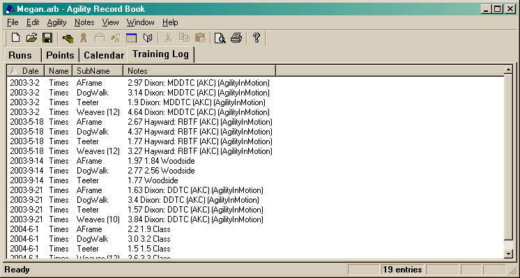

The Training log tab is made up of one main window.

If you right-click on an item (or press the "Window Menu" key on the keyboard), a context menu will appear allowing you to perform a number of actions.
Also, double-clicking on an item, will bring up a dialog (the Properties item in the context menu will do the same thing).